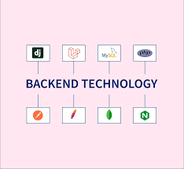

FRONT END TECHNOLOGY
What we see and interact with as the visitors of a website, or as the end-user of a mobile app, is considered front-end technology.

The main languages of front end technology are:
- html
- css
- js
What we see and interact with as the visitors of a website, or as the end-user of a mobile app, is considered front-end technology.
The main languages of front end technology are:
A backend technology is anything used server-side to build stable and efficient web architectures. Back-end technologies include programming languages, databases, communication mechanisms, or frameworks that make up the building blocks of a web application's back-end.
The main languages of back-end end technology are: